Forma Build · €82,000
Own work · €28,500
Lumen Works · €18,500 included
Signal Atelier · €4,800 included
Electrical own work · €13,700
Electrical own work · €13,700
Flow Systems · €14,000 included
Terra Surface · €21,000 included
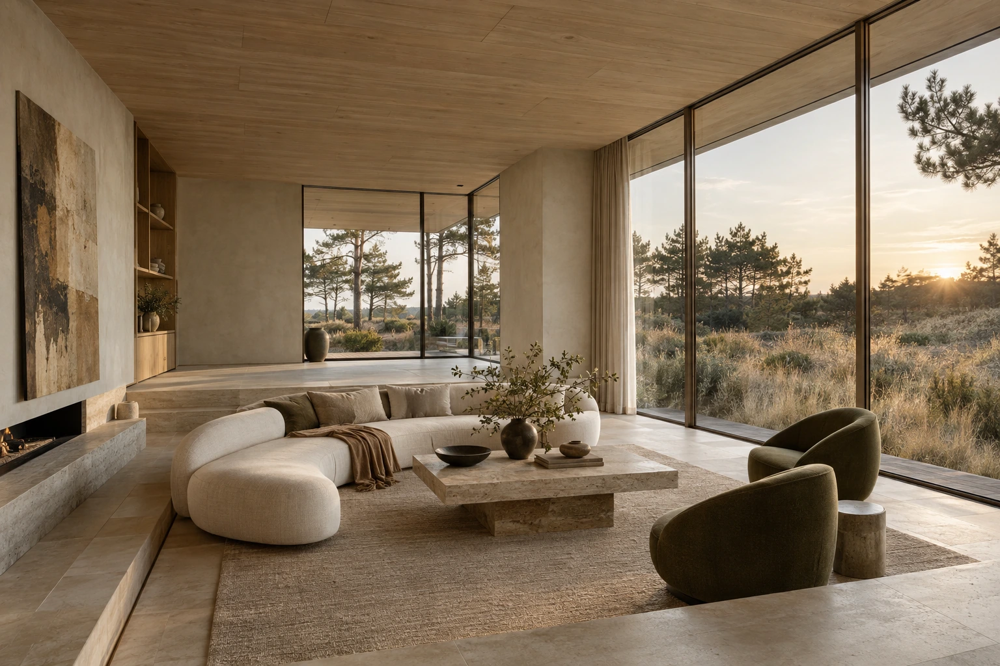
A contemporary villa shaped by light, honest materials and everyday rituals. Interior concept & investment proposal · September 2026
For our fictional clients, Eva and Julian Vermeer, home is where busy days become slow evenings. Villa Auren brings the ease of a coastal retreat to a generous modern family house: welcoming, tactile and quietly expressive.
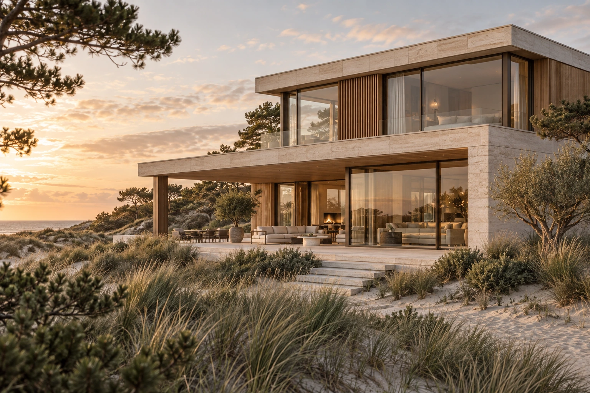
A family home that hosts generously and works effortlessly. Space for cooking together, a place to retreat, and rooms that feel complete without feeling precious.
Architecture does the quiet work. A small family of materials flows from room to room; curved furniture softens the long lines, and bronze details give the palette a little depth.
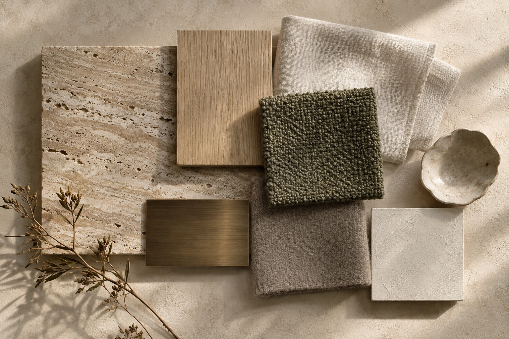
The imagined villa has generous glazing, a strong garden connection and a simple two-storey volume. The exterior image establishes the intended atmosphere; it is a generated concept, not a site photograph.
M01 limestone · M02 European oak · M03 travertine · M04 ivory mineral finish · M05 brushed bronze. Every selection begins with a physical sample.
T01 ivory linen · T02 olive bouclé · T03 mushroom wool · T04 translucent sheers. Earth-toned artwork gives the neutral architecture a warm focal point.
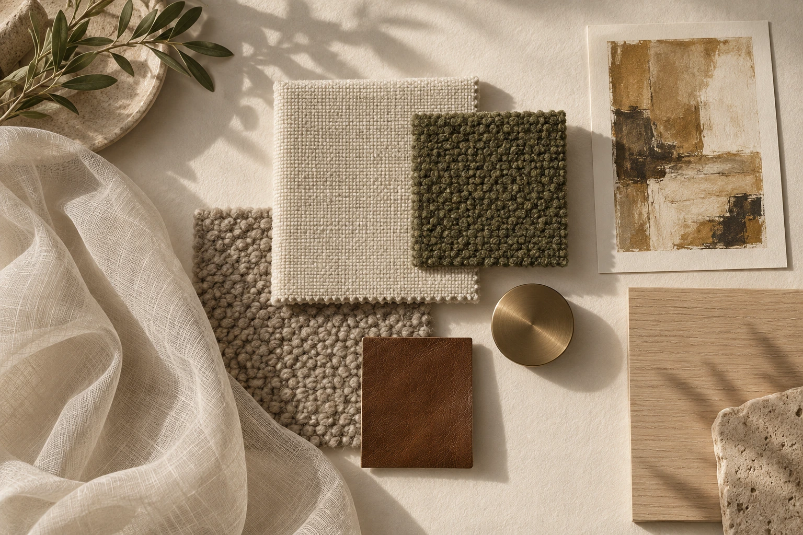
Chalk and sand make the envelope. Oak brings warmth. Olive grounds the furniture. Bronze adds a quiet, deliberate edge.
Illustrative ground-floor zoning only, not measured or suitable for construction. A clear arrival sequence opens into connected kitchen, dining and living spaces; the study has its own quiet edge. Primary suite is on the upper level.
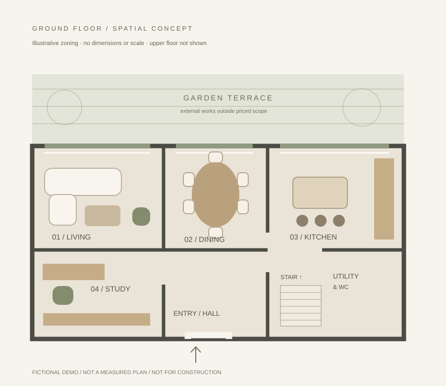
A cutaway model explores the connection between living, dining, kitchen and study. Pale stone and oak hold the rooms together. An illustrative spatial study, not a measured floorplan.
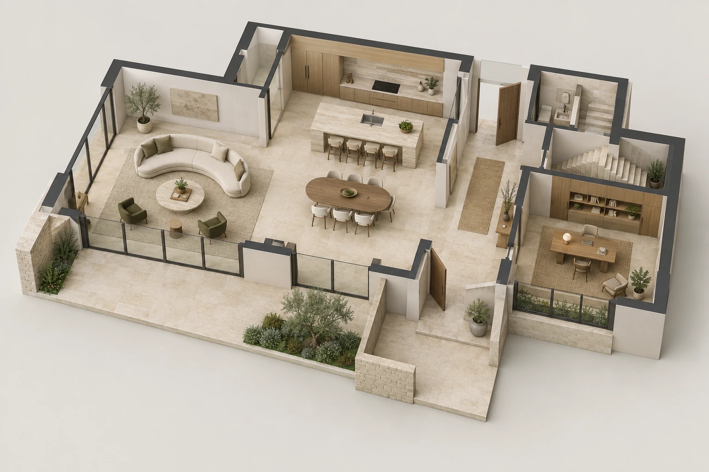
A generous curved sofa, olive lounge chairs and a travertine table face the garden. A lower seating zone creates intimacy inside the open room. Any level change remains subject to accessibility and technical review.
A simple shaded model makes the seating, level change and garden glazing easy to read. Faceted furniture and clear model edges keep the focus on proportion and space.
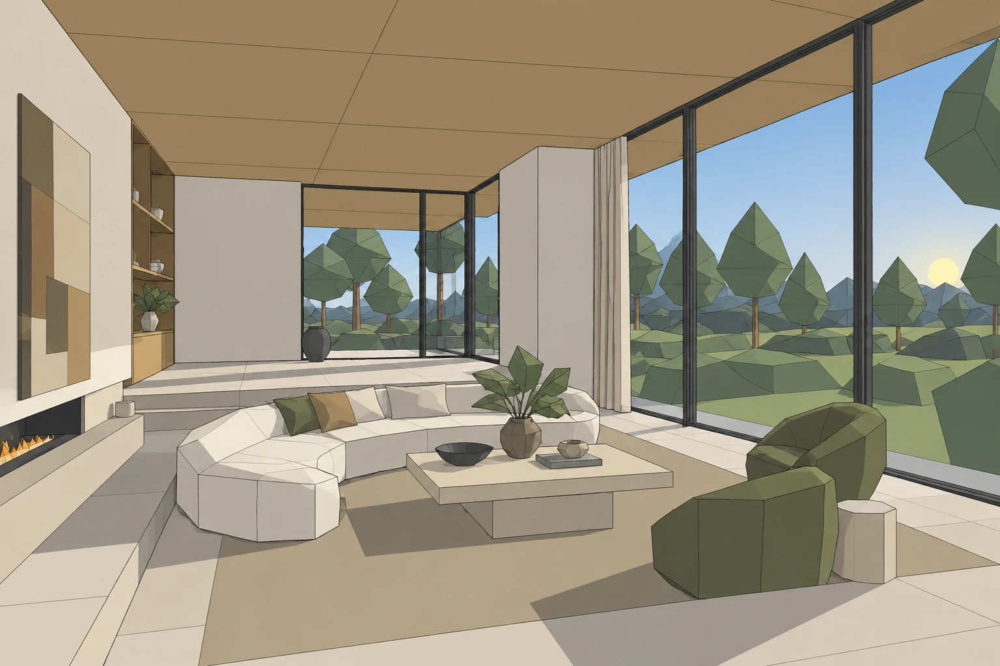
Comfort is designed in: conversational seating, soft acoustic layers, dimmable light and generous space around the central table.
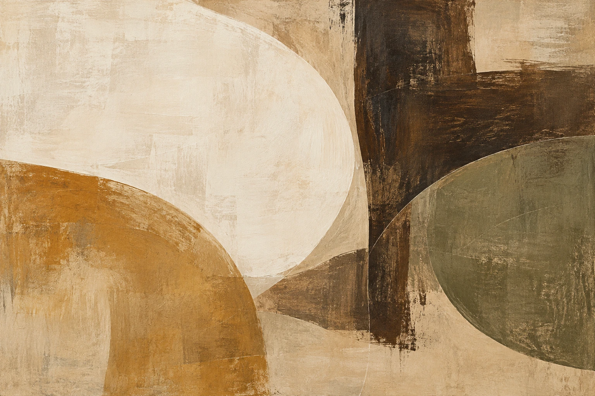
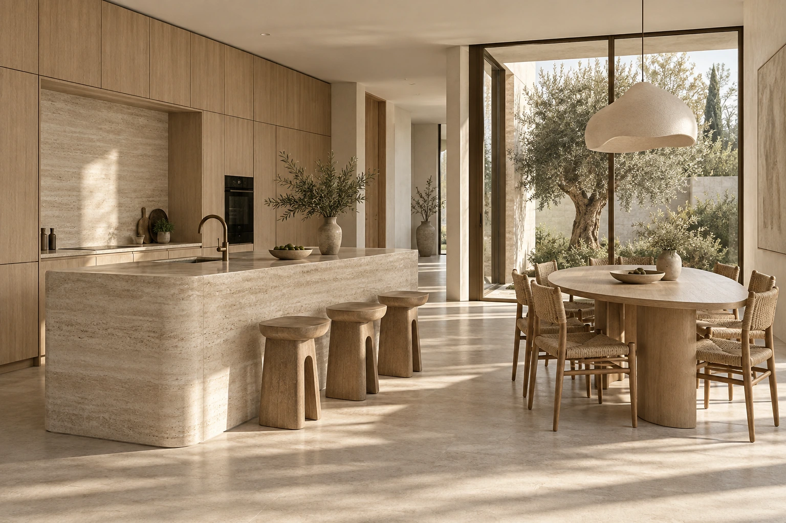
A sculptural travertine island anchors the room. Flush oak cabinetry conceals the practical things; an oval dining table keeps the transition to the garden relaxed.
The €54,000 kitchen package includes €26,000 of cabinetry and fitting, €16,000 of stone and €12,000 of appliances. Stone and appliance subquotes are included once in that package.
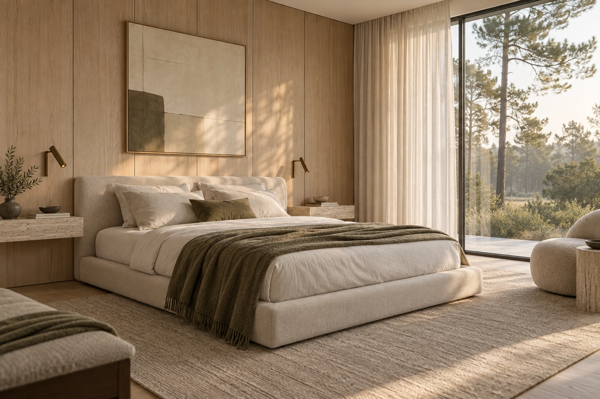
A low upholstered bed, oak headboard wall, travertine shelves and layered curtains create an unhurried retreat. The olive accent connects the suite to the rest of the home.
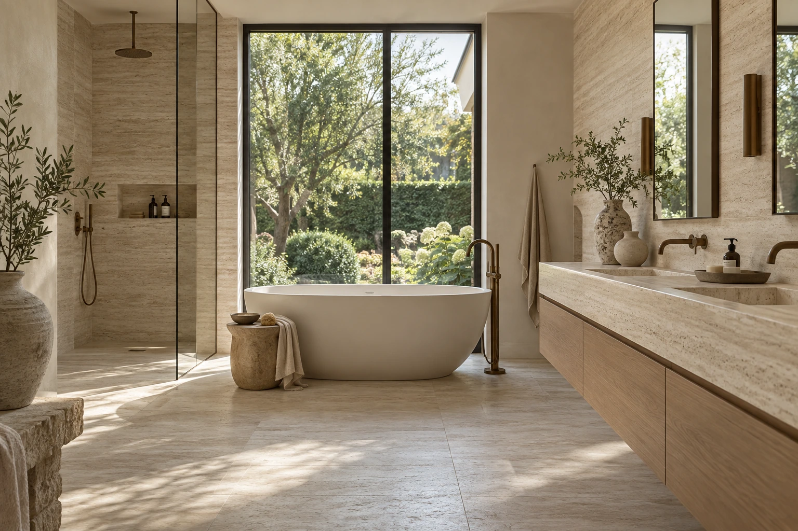
Travertine, bronze and warm oak carry through to a spa-like bathroom. The €23,500 fixture package is separate from the rough-in plumbing already included in construction.
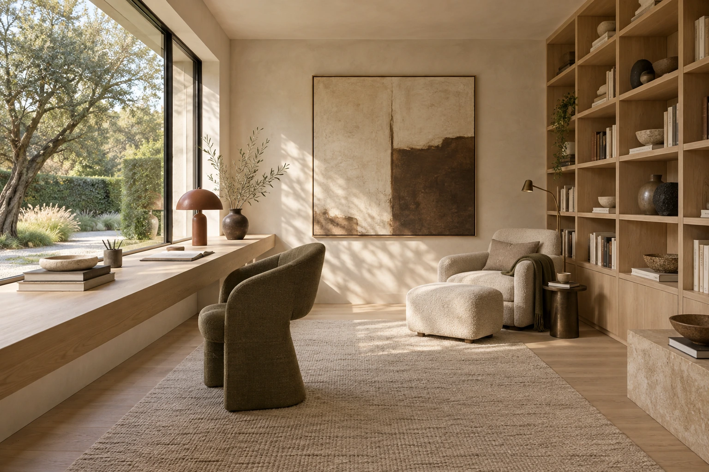
Garden-facing work space, tactile upholstery and an oak library make this room feel part of the home. The illustrated bespoke library and desk are the optional €9,600 joinery upgrade, unselected in the base budget.
“Dune study” — original AI-generated concept artwork for this fictional project. The €6,800 art and styling package allows for two commissions, framing, ceramics and placement. No existing artist is represented.
Three layers of light allow the architecture to change pace: integrated ambient light, focused task lighting and expressive decorative pieces.
€278,500–€286,500 including the €25,000 client-held contingency. The range reflects furniture choices. Optional study and terrace packages are off by default. Unpriced landscape works are excluded. All figures are fictional and use an assumed VAT-inclusive basis.
| Package | Basis | Investment incl. assumed VAT |
|---|---|---|
| Interior construction & installation | Fictional quote | €82,000 |
| Kitchen & fitted oak joinery | Fictional quote | €54,000 |
| Furniture & rugs selection | Allowance | €36,000–€44,000 |
| Decorative lighting | Fictional quote | €12,800 |
| Curtains & window treatments | Fictional quote | €14,400 |
| Bathroom fixtures & vanity | Fictional quote | €23,500 |
| Original artwork & styling | Fictional quote | €6,800 |
| Interior design & site coordination | Fictional quote | €24,000 |
| Client-held contingency | Allowance | €25,000 |
Included subquotes explain a parent price; they do not increase it. The study is an additional optional subquote and increases the total only when selected.
Base selection €278,500. Premium furniture adds €8,000; study joinery adds €9,600; terrace furnishings add €18,500. Selecting all three gives €314,600, including contingency and excluding unpriced landscape work.
Premium textile and rug selection. The furniture range moves from €36,000 to €44,000.
Optional additional joinery package. The study visual includes this upgrade.
Optional loose outdoor furniture and pots. Landscaping remains unpriced.
An indicative 24-week journey from approved brief. Lead times are fictional planning assumptions and begin after drawings and finishes are approved.
Approve spatial story, palette and investment range
Site survey; stone, upholstery and lighting samples
Approve shop drawings; appoint fictional suppliers; decide options
Order long-lead joinery; coordinated first fix, finishes and second fix
Kitchen, bathroom, furniture, curtains and lighting
Snagging, care guide, controls demonstration and final review
A clear approval sequence keeps the project coherent and procurement coordinated.
The demo budget covers the specified interior packages. It does not price a new villa, architectural shell, structural alterations, professional engineering, permits, landscaping or undisclosed site conditions.
A home that feels warm before anyone turns on the lights. Prepared by the fictional Auren Interior Studio for Eva & Julian Vermeer. Demo 01 / Residential villa.